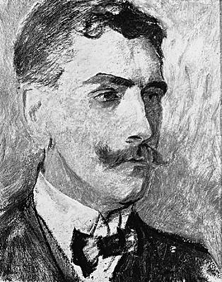

Ferdinand de Saussure
Linguiste suisse (Genève 1857-Vufflens-le-Château, canton de Vaud, 1913).

La vie
Né dans une vieille famille de l'aristocratie genevoise où la recherche scientifique est une tradition (son père, Henri de Saussure [1829-1905] est un naturaliste de renom), F. de Saussure, après des études classiques, entreprend en 1875 une première année de physique et chimie à Genève. Cependant, son goût pour la linguistique s'est déjà manifesté par un Essai sur les langues rédigé à quinze ans et inspiré par la tradition linguistique spéculative du xviiie s. sur l'origine du langage. C'est en 1876, avec son départ pour Leipzig, que commence réellement sa carrière de linguiste. Saussure y étudie pendant quatre années, avec un court séjour à Berlin (1878), le sanskrit, l'iranien, le vieil irlandais, le vieux slave, le lituanien, tout en participant activement aux débats des néogrammairiens (Karl Brugmann [1849-1919], Hermann Osthoff [1847-1909], August Leskien [1840-1916]). Son Mémoire sur le système primitif des voyelles dans les langues indo-européennes, achevé et publié à Leipzig en 1879, fait de lui, à vingt et un ans, un des « noms » de la linguistique. En 1880, Saussure soutient à Leipzig sa thèse de doctorat, De l'emploi du génitif absolu en sanskrit, puis il vient à Paris, où il suit les cours de grammaire comparée de Michel Bréal (1832-1915) à l'École des hautes études, cours qu'il assurera lui-même à partir de 1881. Sa période parisienne (1880-1891) est marquée par une grande activité, grâce à son enseignement, où apparaissent ses premières réflexions sur le « système » de la langue et auquel assiste un auditoire passionné (dont A. Meillet), et grâce à la publication d'articles et de notes qui paraissent dans les Mémoires de la société de linguistique, dont il est devenu le secrétaire adjoint en 1882.
Cette activité contraste avec le silence qui marque la dernière période de sa vie, celle de Genève, de 1891 à 1913. Après avoir enseigné à l'université de Genève le sanskrit et la grammaire comparée, Saussure aborde en 1907 la question essentielle des fondements de la linguistique générale, implicite dans toute son œuvre antérieure, mais il ne livre plus rien de ses longues méditations, hormis au petit cercle de ses élèves genevois, qui transmettront l'essentiel de ses thèses dans un ouvrage publié en 1916, trois ans après sa mort, Cours de linguistique générale, réalisé par Ch. Bally et Ch. A. Séchehaye (1870-1946) à partir des notes des cours que Saussure a professés en 1906-1907, en 1908-1909 et en 1910-1911.
Citacions de Ferdinand de Saussure
Si l'on veut démontrer que la loi admise dans une collectivité est une chose que l'on subit et non une règle librement consentie, c'est bien la langue qui en offre la preuve la plus éclatante.
Le temps change toutes choses ; il n'y a aucune raison pour que le langage échappe à cette loi universelle.
C'est le point de vue qui crée l'objet.
Livres de Ferdinand de Saussure
- Mémoire sur le système primitif des voyelles dans les langues indo-européennes (1879);
- De l'emploi du génitif absolu en Sanscrit (1881)
- Une vie en lettres: 1866-1913
- Les anagrammes de Ferdinand de Saussure(1906 – 1909);
- Cours de linguistique générale (1916).